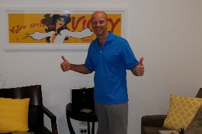

Sleep deprivation is good for you....
|
| Position | Name | Points | Won |
|---|---|---|---|
| {{result.position}}{{positionSuffix(result.position)}} | {{result.name}} | {{result.points}} | {{result.cash | currency}} |
| Position | Name | Played | Won | Win Ratio | Ave Points | Ave Position | Points |
|---|---|---|---|---|---|---|---|
| {{$index + 1}}{{positionSuffix($index + 1)}} | {{result.name}} | {{result.played}} | {{result.won}} | {{result.won / result.played * 100| number:2}} % | {{result.points / result.played | number:2}} | {{result.averagePosition | number:2}} | {{result.points}} |
(Note … this starts long and ends very, very quickly – notes were scant later)
Round 1
It's hot early … jade misses the excitement …
Freese and Leopold go ‘balls out’ and both of them have absolutely no idea what they are doing. Ben and Brian look on like un-approving parents … nett result. There’s a split pot on that that great technical poker term – sweet fcukall.
Leopold goes bananas for the opening 20 minutes wins everything…. Life's good, he's thinking of a home in Brighton and maybe even donating Jade's deposit so he stays at the Heath.
The mood then turned… Freesy after losing sailing again (yeah weird sailing link) – was not overly happy with Brian completely ignoring him for numerous hands and his pedantic follow the rules style antics. Tensions hit a high when Freesy was labelled an avionics expert; never call a structural engineer an avionics pussy. Noting too that Freesy is flanked by Punchy 'Ingham'. Things could turn sour tonight …
Ice threatened to clog the air when Brian noted that it was all Freesy's fault for pulling his cards off the table… Brian mumbled … avionics idiot!
Speaking of idiots, Jade walked in … late. Unfortunately he sees normal, thoughtful poker – boring style.
Anyway the moods softened …
We then had 15 minutes of boring shit where Wombat tried hard nearly winning 3 in a rows until Punchy actually physically moved … sucked on his tube (some kind of cheap Stella Artois rip-of bear) (Hint: Moving is actually Ben's great flaw, his 'tell' – yep, when you don't move and hardly breath through 47 hands and then all of a sudden chew on a cheap beer… people know) No Wombat – Bang – he gets hit like by the Big Ben Truck and smacked into the nearest wombat hole.
Then things got exciting again when Freese jumped in with a strong hand – winning 2 aces but only an appetiser to the next hand when Wombat and Leopold went head to head; Wombat with the first all-in of the night and gets it with Ace Jack to Ace 10 – Wombat breathes again; life is good.
There was an air of anticipation… Freesy had added a kinda psycho air to the betting, Junior is a nutbag when it comes to betting, Leopold – complete fruitloop (betting or not), Wombat goes crazy hard Paul – the thoughtful but some what aggressive better… it was a cocktail of nutbags
On the flipside side, Mark V was first out and did nothing … just quietly failed and got charity money to get back in. Leopold whispered to himself – 'C'mon on Mark – get nuts with the rest of us – you'll see the light.'
Jade started to wake … and Mark started to go bang with his charity coins; Junior went all in .. Mark V then wins a massive pot with Kings 'on the flop'…. unbelievable and predictanle Jade does his tits … it's just not raaarth; he didn't bet like he had Kings ….
Freesy's still in a very tight mood 1 hr in…. Wombat and Leopold smiled knowingly; Wombat whispered 'Fcuk this could be on, all it brawl like the old days, this is what I'm talking about….' Leopold thinks yeah … if it's on, I'll be behind you cowering a little… anyway back to poker.
Then bang…. Big story … Leopold) goes hard on Kings and 8's, Junior is in strong as is Mark V. Huge pot… (Mark V, realising he's playing with charity money politely pulls out. Leopold thinks he's got it – Junior thinks he lost not seeing 3 of a kind nor his full house. He throws his cards down in disgust and then to his surprise he's won one of the biggest pots of the night. The term 'fantastic idiot' comes Leopold's too mind. Junior Fantastic now has a pile of chips heading into round 2
Freesy festers…..
Round 2
Wow – what a start … Brian pulls a "high lord" move; a rare move played – it reeks of look at me – I don't do much but when I do … what the fcuk out because I am this tables High Lord. (Now…on any given night this may have worked but fair to say that Brian had not covered himself in glory …mis-dealing, mis-advice, ingoring the Freese..) So, nearly everyone dropped into the hand - no man at the table played Brian an iota of respect and the pot builds and builds. There's possibilities of straights and flushes, coin flying everywhere and Mr Fantastic (Junior), Leopold and Mark V end the betting with $5000 in… the two Mark's split the pot on Aces. Ben and Brian go …what? Jade thinks … how can I play like the exciting guys he thinks I know I'm crazy too – how do I get that into my poker… ?
Later - Paul plays a really smart game and wins a quietly good pot. Leopold muses – he's the smokey at the table, I hope the cards don't fall his way because he's got us all covered for tactics – well perhaps not Brian and Punchy)
Andrew continues to steam in the corner, Ben does nothing … ever and Brian is still reeling from the lack of respect shown a few hands back.
Mr Fantastic re-emerges … to commentator goes tits off. "Juuuuunior" as certain football commentators scream upon a goal ….. Juuuuuuuuuuuuuuuunioooooooor. Amazing wins a massive large pots Ace 10 to Ace 9 – against a newly confident Jade. Alas – Jade loses, the game is once again shite ad he goes back to buying a house. (Long story that … the author want to expand …but won't)
Watch out Big Ben wokes up again – the tell is on. Leopold backs away in mock deference. Punchy sees blood – Jade. He lined him up and struck and crack … . Coins flying everywhere – Junior was in for a while but temperature got too hot and Jade stayed in. God knows why – In Jade's words "I was just playing shit cards like everyone else!" ? Who know's – only the shadow knows how Jade works. Jade … out!! Gorn. He took on Punchy Ingham and is now a carcus – looking for a house.
Tic… tic…
Same same, but Paul and Wombat is playing smart accumulating … Freese continues to be ignored by Brian …
Same, same – Brian just stuffed up another deal
Round 2 ends the same as Round 1…. Junior Fantastic wins a hand in a hand in a very odd manner.
Round 3
(Sorry guys this ends pretty quickly – stopping taking notes to actually play cards)
Bang …off we go again …Wombat, Ben, and Leopold head to head …this time Leopold on top with Ace after 3 7's
..and I have to get back to the cards…
…back now … just smashed Paul out of the game. Easy game.
Leopold takes on the High Lord on some stupid rule. He normally wouldn't but hell the High Lord is having a nightmare – so kicking blokes on the ground is fair. Leopold attacked Paul just at the right time to take some shit side-prize that Brian and Punchy had invented but now – the side prize remains a mystery and only one played can ever win it … Leopold is still confused and may one day enter Tattslotto as an easier way to grab some cash.
Freesy has cooled down and just won a huge pot.
Brian's back! … just went all in on a pair of 7's … odds his favour then was losing on the draw the Junior's 9's then gets arse-up lucky and takes a straight. Win.
It's all happening fast … I just kicked Ben out of the game … Easy game. Actually Ben very unlucky sitting Queens with me pulling 2 8's in the river to take a huge pot. Exit stage door left 'Punchy'.
Note … Ben and Brian then start talking and googling stats – Ben Unlicky as he had an 81.35427% chance of flipping the right flop. Brian – yeah I hear ya ….I had a 59.713242% chance of flopping the right flip.
Leopold thinks – I am have a 100% chance of never opening one of Jade's emails at work.
Brian … ignores Andrew again
Wombat thinks there's a 70% chance of a brawl tonight and then as the topic turned to brawls Wombat actually hardens up and we discuss whether you sit or stand with a raging mongrel. Jade lifts his head from a real-estate website to say he only ever sits. Leopold appreciates that he keeps the bathroom clean but can only think that all Englishmen are actually feamles or lesbians at best.
Freesy is smiling a lot now … thinking "Why did I come to sit at this table with this bunch of wackers"
|  |
| Home advantage Mark taking down the win.... |
Oh shit – there's a poker game on….
No more note…
So I'll make up a quick ending. It might not be as truthful and accurate as the 'minutes above'
Ok short ending
Leopold wins … others came second, third and fourth but no one cares. In poker you either number 1 or you don't have a place in the sun.
The lesson sobriety and lack of sleep is a great tune-up for a poker night
A final question based on a massive ego…
Did Leopold actually close out every player on the table … (to be honest, I cannot remember) but if so – has that happened before because usually a few of us are taking each other out.
Gotta go. The reaper signs off.